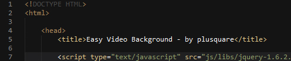
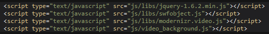
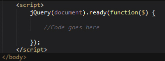
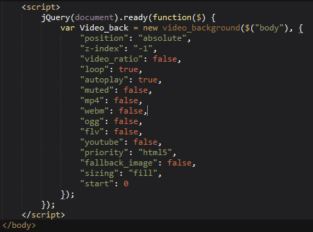
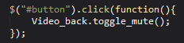

Hi there! First of all thanks for purchasing our theme! :-)
If you have any questions that are beyond the scope of this help file, please feel free to ask your question at the support ticket system at ticksy.
This file serves to help you get started and master Easy Video Background's script so you can add native and youtube videos as background anywhere in a matter of seconds
We hope you like the script and make the best use of it! Best Regards
Plusquare Team
I'll start to explain what your download package comes with, and what you should look at and upload to your project. The downloaded package comes with some examples of how to get video in a site very quickly, you also have the scripts you'll need to import so you have the following:
You then have the html files which are examples on how to implement and call the script easily. In resume you should take to your project only the folders "flash" and "js", the rest will be modifications to your project's html or php file depending on which technologie you're using.
In this chapter I'll gonna explain and demonstrate how you can include video background to your site in a matter of a few minutes.
The first thing you have to do is making sure your html has the html5 doctype so that the video tag can work, the following image shows what it should look like:

So the first two lines of your html should look exactly like the first two lines of the image above, and that's it you have html5 set to your document.
You now have to import the scripts that easy video background will need to work correctly, assuming you've already uploaded the js and flash folder to your project you just have to import the four javascript files in your head section, like the following:

And that's it, you know can use the easy video background script as you want :-). We'll explain how to use it in the following chapter.
If you followed all the scripts above, you can now use the script to add video to where you want, we've provided some usage examples in the download package:
The above examples should be pretty self explanatory and have some comments to guide you through it, but the basic notions are to create a script tag just before the close of your page body tag and wait for document to be ready with jquery, then you can call the video script, so you should have the following as basis:

Inside this you can now create the video call, like this (all options are shown for example purposes and have the default values, some options don't need to be set when others are, for example if you're setting up a youtube video you don't have to set the mp4, flv.. options):

So you call the script with the call video_background($jquery_object, options), in this case we're adding background to the whole page so to the body tag, but you can select any div.
So you have a lot of options to customize how your video functions, let's view what each one does:
You have a lot of control functions you can call through the video_background you've created:
You can call any of these functions using the video background object, on a click event for example:
